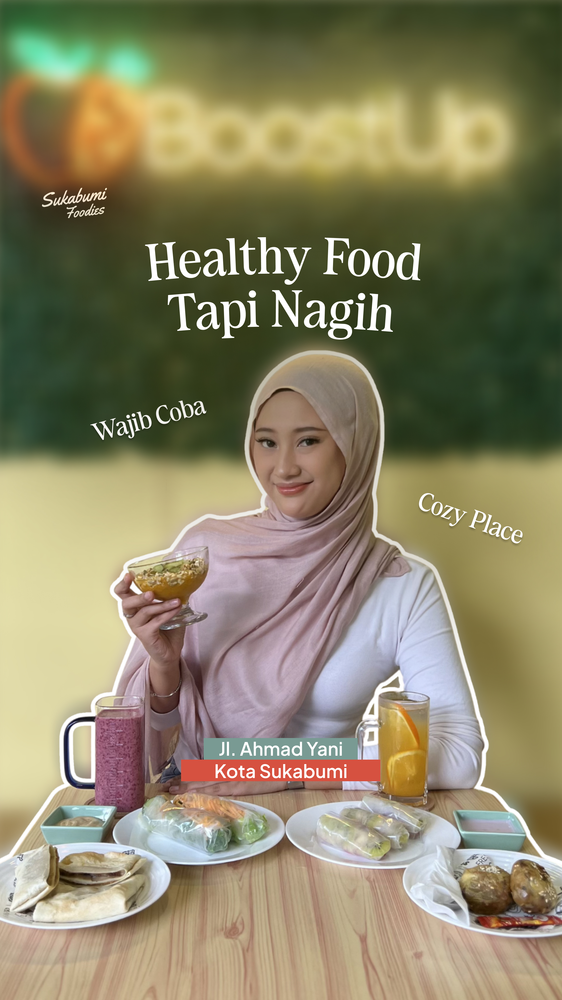
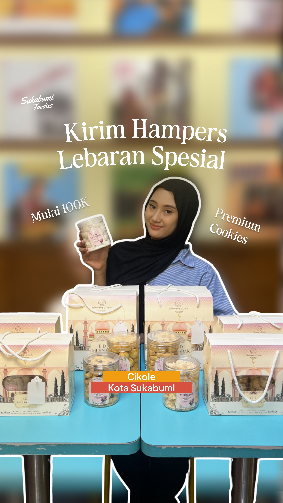

Graphic Design Project
Sukabumi Foodies
About The Project
Created visual content for @sukabumifoodies, a culinary social media platform that highlights food recommendations, café spots, and trending food experiences around Sukabumi. The content style focuses on warm tones, clean compositions, and engaging typography to create aesthetic and appetizing visuals that attract audience attention.
Instagram Reels / Story


